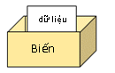
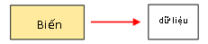

Explain the concept of variables in python . You will know what variable is in python , how to name a variable in python as well as how to use python variables after this lesson.
What are variables in python
There are two schools of variable definition in python as follows:
The first school considered the variable in python as a box for storing data. These data can be numbers or strings that you can store in the variable and use over and over again. The results of operations such as calculating numeric values, editing text strings will be temporarily stored in variables and used for later use in the program.

The second school considers the variable in python to be the same as the tag of the address of the data. The data is stored in separate locations in memory with different addresses, and the variable in python is the tag used to write the address of that data in memory. When using data, we access the address written on the variable of that data.

Trường phái thứ hai coi biến trong python giống như thẻ ghi địa chỉ của dữ liệu. Các dữ liệu được lưu giữ tại các vị trí riêng biệt trong bộ nhớ với địa chỉ khác nhau, và biến trong python là thẻ dùng để ghi địa chỉ của dữ liệu đó trong bộ nhớ. Khi sử dụng dữ liệu, chúng ta sẽ truy cập vào địa chỉ được ghi trên biến của dữ liệu đó.
You also do not need to pay too much attention to which school is right, just remember the concept of variables in python in one of the two ways above.
Name variable in python
To name variables in python we need to follow Python’s Variable Naming Rule as below:
- The characters can be used to name variables in python is a ~ z, A ~ Z, 0 ~ 9, underline _, font auto drought, Vietnamese marks etc.
- Numeric values (0 to 9) cannot be used for the first character.
- An underscore can be used for the first character. However since the underline is often used in special cases, it is better not to use it.
- Case sensitive when naming variables in python
- Python keywords cannot be used.
We will learn more about the Rules of variable naming in Python in the table above as follows
Use alphabet characters, numbers, and underscores to name variables in Python
From Python 3 onwards, we can use kanji and accented Vietnamese to Name variables in python, however Kiyoshi does not recommend this method.
tên = "Kiyoshi" |
Do not use numeric values for the first character of a variable
We cannot use numeric values for the first character of the variable in python, because a SyntaxError will appear.
7up = 100 |
Error SyntaxError:
File "Main.py", line 1 |
Case sensitive when naming variables in Python
Case sensitive when Naming variables in python. The two variables in the example below are different and give different results:
str = "I love" |
Do not use Python keywords to name variables in python
We can’t use Python keywords to name variables in python. Keywords are Python-only words and you cannot use them to name variables.
You can check the List of keywords in python with the command below.
import sys |
And here is the table of keywords in python .
False await else import pass |
If you use the keywords in python in the table above to name the variable in Python then the error SyntaxError will return the following example:
from = "Vietnam" |
Lỗi SyntaxError:
File "Main.py", line 1 |
How to use python variables
In the example below, we write a program that calculates the prices (including VAT) of the fruits and prints them on the screen.
print ("Orange price" + str (120 * 1.1)) |
If every time we also declare VAT as above, it can be mistaken for carelessness, or in the case of VAT adjustment by the state, we must completely correct it. That is very easy to mistake and costly.
Instead, we’ll use the variable in python by creating a variable tax, then storing the VAT value 1.1in. When using it, we just need to name the variable taxas below:
tax = 1.1 |
Both of the above spellings give the same result:
Orange price 132.0 |
Assuming the state has raised the VAT rate to 1.5times, then simply change the value of the taxcity 1.5
tax = 1.5 |
From the above example, you can see that using variables in python helps us to minimize errors compared to entering values directly, as well as help to change the value of data in the program quickly and efficiently. than.
Summary
Above, Kiyoshi explained what the concept of a variable is in python, how to name a variable in python as well as how to use a variable in python . To better understand the lesson content, practice rewriting today’s examples.
And let’s learn more about Python in the next lessons.
HOME>> python for beginners>>variables in python